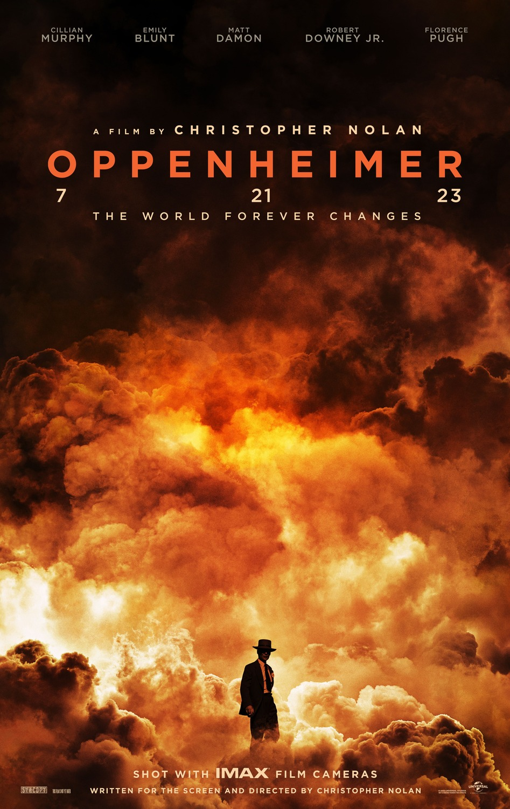
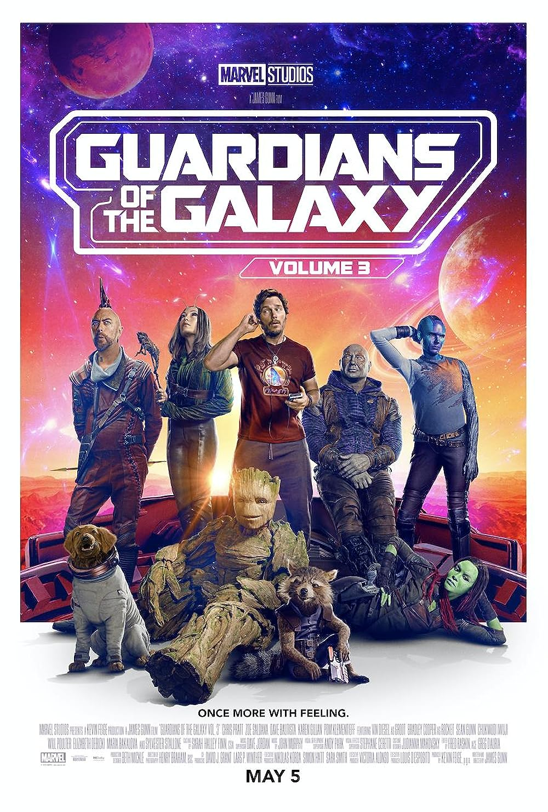

Popular
The Super Mario Bros Movie

The Super Mario Bros MOVIE was released on April 5, 2023
The Directors are Aaron Horvath, Michael Jelenic.
It has gotten 59% Rotten Tomatoes and has made around $574.1 million dollars.
Whle working underground to fix a water main, Brooklyn plumbers and brothers Mario and Luigi sre transported throught a mysterious pipe to a magical new world. But when the siblings are separated, an epic adventure beigns.
Barbie

Barbie was released on July 21, 2023.
The Director is Greta Gerwing.
It has gotten 88% Rotten Tomatoes and has made around $459.3 million dollars.
Barbie and Ken are having the time of their lives in the colorful and seemingly perfect world of the Barbie land. However, when they get a chance to go to the real world, they soon discover the joys and perils of living among humans.
The Super Mario Bros Movie

Spider-man: Across the spider-verse was released on June 2,2023.
The Directors are Joaquim Dos Santos, Justin K, Thompson, Kemp Powers.
It has otten 96% Rotten Tomatoes and has made around $380 million dollars.
After reuniting with Gwen stacy, Brooklyn's full-time, friendly neighborhood Spider-Man is catpallued across the Multiverse, where he encounters a team of Spider-people charged with protecting its very existance. However, when the heroes clash on how to handle a new threa, Miles finds himsef pitted against the other Spiders. He must soon redefine what it means to be a hero so he can save the people he loves most.
Barbie
Oppenheimer was released on july 21, 2023.
The Director is Christopher Nolann.
It has gotten 93% and has made $939.2 million dollars.
During Wolrd War II, Lt. Gen. Leslie Groves Jr. appoints physicist J. Robert Oppenheimer to work on the top-secret Mahattan Project. Oppenheimer and a team of scientists spend years developing and designing the atomic bomb. Their work comes to fruition on July 16, 1945, as they witness the world's first nuclear explosion, forever changing the course of history.
Barbie
Guardians of the Galaxy vol 3 was released May 5,2023.
The Director is James Gunn.
It has gotten 82% Rotten Tomatoes and has gotten $845.6 million dollars.
Still reeling from the loss of Gamora, Peter Quill must rally his team to defend the universe and protect one of their own. If the mission is not completely successful, it could possibly lead to the end of the Guardians as we know them.
Barbie

Ant-Man and the Wasp Quantumania was released February 17, 2023.
The Director is Peyton Reed
It has gotten 46% Rotten Tomatoes and has made around $476 million dollars.
Ant-Man and the Wasp find themselves exploring the Quatum real, interacting with strange new creatures and embarking on an adventure that pushes them beyong the limits of what they thought was possible.